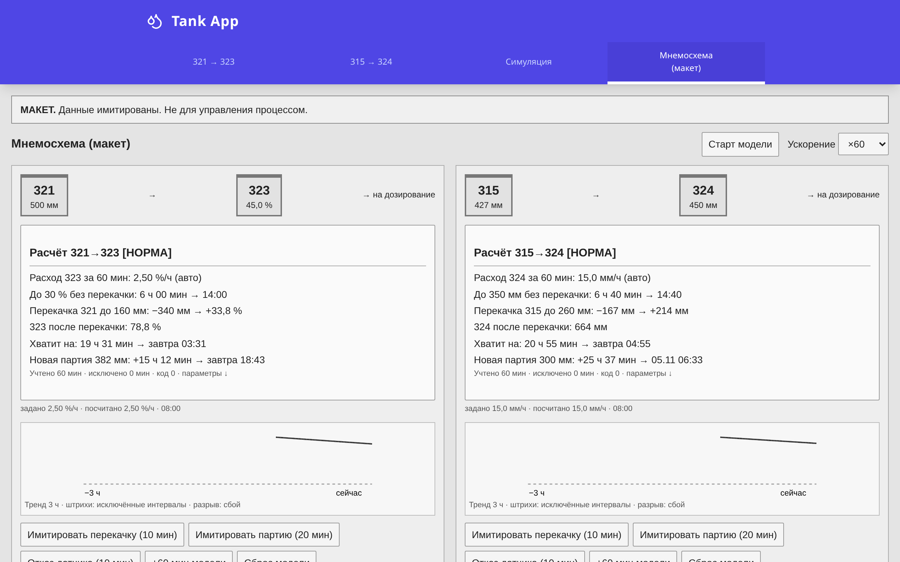
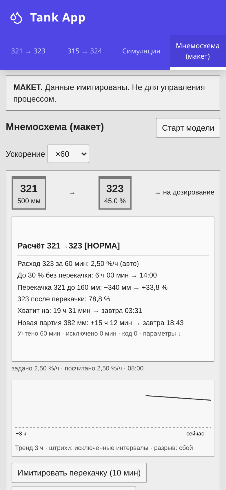

Автоматический расчёт запаса раствора на мнемосхеме
Пояснительная записка к улучшению малыми шагами. Связки 321→323 и 315→324. Материал для рассмотрения; приведённые экраны — макет с имитированными данными.
Проблема
На мнемосхеме не видны расход раствора из 323 и 324 и время до неснижаемого остатка. Оператор снимает уровень, через час повторяет замер, вручную учитывает перекачку, пересчитывает единицы и прогнозирует запас. Это занимает [__] мин за смену; при разных подходах смен возможны ошибки. Если перекачку или приготовление выполнить поздно, возникает риск снижения уровня ниже остатка и нарушения дозирования; работы с перекисями приходится выполнять в спешке.
Решение
Разместить два информационных блока у ёмкостей 321 и 315: автоматический расход за 60 минут, прогноз без перекачки, после расчётной перекачки до выбранного уровня и для новой партии. Интервалы перекачки и сбоя датчика исключаются из расчёта расхода. Предусмотрены индикация «Внимание» и «Срочно», пояснение причин отсутствия прогноза и проверка перелива при заданном максимуме расходной ёмкости.
Как выглядит

Макет: 03.11.2026, 08:00, шум отключён для воспроизведения контрольных примеров. На ПК блоки рядом; на мобильном экране — последовательно. Снимки сделаны из прототипа, они не являются экранами реальной АСУ ТП.
Алгоритм коротко
Раз в минуту сохраняются уровень и качество. Для пригодных участков часового окна суммируются убыль уровня и длительность. Расход равен их отношению. Из запаса вычитается неснижаемый остаток; деление на расход даёт время работы. При недостатке пригодных данных допускается ограниченное удержание последнего расхода с указанием возраста; при плохом текущем датчике прогноз не строится. Коэффициенты перекачки сохранены из калькулятора автора; подготовлены тесты, контрольные CSV и функциональный блок на ST для проверки службой АСУ ТП.

Мобильный вид блока 321→323. Дополнительный снимок 315→324 — в комплекте изображений.
Ожидаемый эффект
Единый расчёт для всех смен снижает вероятность ошибок и помогает планировать приготовление и перекачку без спешки, поддерживать надёжное дозирование и учитывать риск перелива. Фактический расход и его отклонения становятся видны сразу после накопления данных. Ожидаемая экономия времени оператора — [__]; подтверждается замером до и после внедрения. Количественный эффект — УТОЧНИТЬ.
Затраты
Предполагается программная доработка силами службы АСУ ТП без нового оборудования: [__] чел.-ч. Трудоёмкость и стоимость [__] — УТОЧНИТЬ после выбора места расчёта и оценки доступа к истории и качеству сигналов.
Безопасность
Расчёт только информационный. Он не управляет оборудованием, не формирует технологическую сигнализацию, не меняет блокировки и ПАЗ, не заменяет регламент и инструкции. Цветовые подсказки — без звука и журнала тревог. Прототип не подключается к реальным системам и не устанавливается на станции АСУ ТП. Внедрение выполняется по действующей процедуре управления изменениями.
Что нужно от службы АСУ ТП
УТОЧНИТЬ роли ёмкостей и сигналы перекачки; максимумы 323, 324 и 315; качество и инженерные единицы датчиков; характерные расходы и рост при перекачке; пороги расхода и индикации; пригодность окна 60 минут. Выбрать платформу и место расчёта (контроллер, сервер или архив), привязать условные имена к сигналам, согласовать время экрана и проверить ST на контрольных примерах. Отдельно уточнить фактическое время приготовления партии для возможного развития. Полный перечень — в отчёте docs/REPORT_CODEX.md.